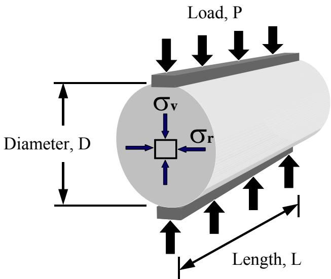
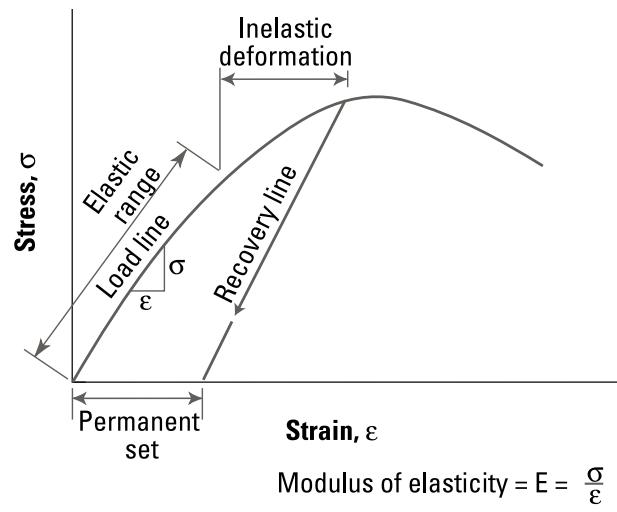
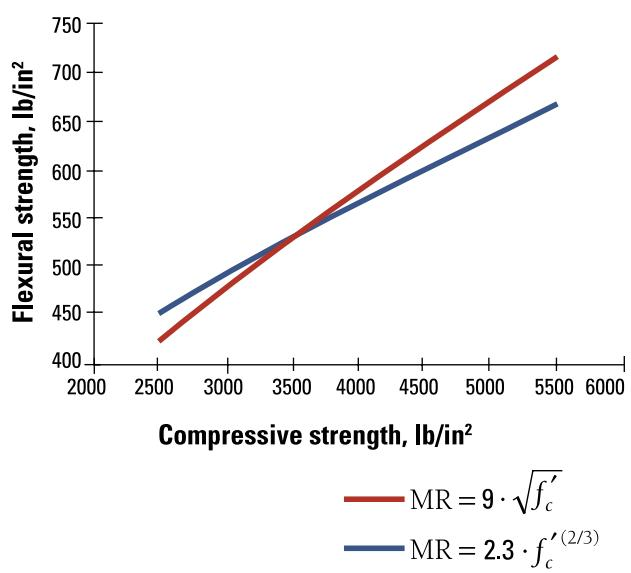

Concrete Tensile Strength Testing
Concrete tensile strength testing in pavement engineering comprises two principal laboratory methods—flexural (modulus of rupture) testing of prismatic beams and the indirect splitting tensile test on cylindrical cores—each applying a measured load to a specimen of uniform cross‑section until failure, thereby quantifying the concrete’s ability to resist tension that develops under traffic‑induced bending[1][4]. In flexural testing a beam is loaded at a constant rate (typically 125–175 lbf/in² per minute) either at third‑point or center‑point positions as prescribed by AASHTO T 97/ASTM C78 or ASTM C293/AASHTO T 177, and the resulting modulus of rupture is calculated from the peak load and beam geometry; in the splitting test a vertical compressive load is applied at 1.3 mm/min to a cylinder (per ASTM C‑496) causing it to split along its mid‑plane, with tensile strength derived from the ultimate load and specimen dimensions[5][6]. The measured tensile values—typically about one‑tenth of compressive strength—serve as primary inputs for pavement thickness design, traffic opening decisions, and assessment of existing slabs, while specimen moisture condition, end preparation, and aggregate size limits are critical to obtaining reliable results[1][5].
Sources (6)
Material purpose and applicability
Concrete tensile strength testing in pavement engineering consists of two principal methods: flexural‑strength (modulus of rupture) testing of beams and the indirect splitting tensile test on cylindrical specimens. The flexural tests—most commonly performed with third‑point loading as defined by AASHTO T 97/ASTM C78, but also possible with center‑point loading per ASTM C293/AASHTO T 177—load a simple beam at a constant rate until failure, and the resulting modulus of rupture is calculated. This provides a direct measure of the concrete’s ability to resist the tensile stresses that develop when traffic loads bend a slab, and the measured flexural strength serves as a primary input for pavement thickness design and for determining the slab depth required to prevent flexural cracking. The splitting tensile test, defined in ASTM C‑496, applies a vertical compressive load at a constant deformation rate to a cylinder or core until it fails in tension; the failure load is used in a standard equation to obtain indirect tensile strength. Results from laboratory‑cured specimens, field‑taken cores, and in‑place cores are employed to verify that the hardened concrete has achieved sufficient tensile capacity before opening to traffic and to assess the structural integrity of existing slabs, especially when evaluating cracked or shattered pavement sections. [1][4][5]
The following figure illustrates the setup for an indirect tension test.

Schematic of the indirect tension test on a cylindrical concrete specimen. [5]The figure depicts a cylindrical core with diameter D and length L subjected to vertical compressive loads applied along its top and bottom edges.
[1] — Ch. 3 (pp. 56–57), Ch. 6 (pp. 161–165); [4] — Ch. 3 (p. 70); [5] — Ch. 3 (pp. 68–69)
Composition and characteristics
Concrete tensile strength testing is performed on specimens that possess a uniform cross‑section—either cylindrical cores or prismatic beams. The guides specify cylindrical specimens “typically 6 × 12 in. or 4 × 8 in.” with “the diameter of the mold … at least three times the largest aggregate,” and beam specimens “a simple beam… subjected to third‑point loading (ASTM C78) or center‑point loading (ASTM C293).” In all cases the material must be a solid concrete core or beam of known dimensions; length L and diameter D for cylinders, and defined width, depth, and span for beams. The test applies a measured force—either an axial compressive load on the cylinder side strip (“loading a cylinder … until a crack forms down the middle”) or a continuously increasing flexural load on the beam (“applied continuously at a constant, increasing rate—typically between 125 and 175 lbf/in² per minute—until it fractures”). The loading rate is controlled: “a vertical compressive load is applied at a constant deformation rate of 1.3 mm per minute” for splitting tests, and the same continuous rate for flexural beams. Critical physical characteristics include the condition of specimen ends (“ground or capped”) and moisture state, both of which “greatly influence… stress distribution” and “have a considerable effect on the resulting strength.” Proper handling—“careful handling during saw‑cutting, transport, and trimming”—is required to avoid pre‑test damage that could compromise results. The tensile strength is derived from the ultimate load together with the known geometry (e.g., σ_t = 2P_ult/(πLD) for cylinders or breaking load divided by cross‑sectional area for beams). [1][4][5][6]
[1] — Ch. 6 (pp. 164–165); [4] — Ch. 3 (p. 70); [5] — Ch. 3 (pp. 68–69); [6] — Ch. 7 (p. 90)
Variations in raw‑material composition, source, processing, and proportioning exert a direct and measurable influence on concrete tensile strength testing. Because flexural (tensile) strength is derived from an empirical link to compressive strength, each mixture requires its own calibration of the coefficients that relate these properties; any change in the constituents or their ratios alters that relationship. Moreover, where a specimen originates and how it is handled after casting further modify the observed tensile performance. Field‑cast and cured specimens typically display lower splitting tensile strengths than laboratory‑cured cylinders due to greater variability in curing conditions, while moisture state at testing can shift results—moist specimens tend to retain higher flexural response even as compressive strength may drop. Test piece dimensions also play a role, with smaller cylinders often yielding higher compressive (and thus inferred tensile) values from the same mix. Consequently, accurate prediction of concrete tensile behavior demands mixture‑specific laboratory calibration during proportioning and careful control of specimen source, curing, moisture, and size. [1]
[1] — Ch. 3 (pp. 56–57), Ch. 6 (pp. 164–165)
Key material properties
The guides agree that concrete tensile‑strength testing is governed by a combination of mechanical, physical, chemical and thermal properties. Mechanically, the tests rely on “flexural or modulus of rupture, which represents the ultimate tensile stress at the extreme fiber of a beam” and on the “indirect tensile (splitting) test evaluates concrete’s tensile capacity, a mechanical property expressed as σ_t and calculated from the ultimate vertical compressive force applied to a cylindrical core together with its length and diameter.” Stiffness also matters: “stiffness (modulus of elasticity) and Poisson’s ratio control deflection and lateral strain, influencing crack initiation during the test,” while the tensile capacity is linked to compression by the fact that “concrete’s tensile capacity is roughly one‑tenth of its compressive strength” and that “the modulus of elasticity rises with increasing compressive strength.” Physically, specimen condition is critical: “specimen moisture content and geometry are critical,” “keeping the cylinder moist avoids drying‑induced strength loss,” and “proper dimensions and end preparation ensure a uniform tensile stress distribution.” Accurate dimensional data are required because the result depends on “accurate knowledge of the specimen’s physical dimensions (length L and diameter D).” Chemically, the presence of admixtures or heat treatment can modify behavior: “admixtures or heat treatment that accelerate early strength can alter the microstructure, increase permeability and reduce durability, thereby affecting measured tensile behavior.” Thermally, the concrete’s temperature history influences when reliable testing is possible: “temperature history captured by maturity testing determines the rate of strength development and the point at which the concrete attains sufficient tensile capacity for reliable testing.” [1][5]
The following figure illustrates the generalized stress-strain behavior of concrete that results from these complex mechanical and physical interactions.

Generalized stress-strain curve for concrete [1]The figure displays a generalized stress-strain curve illustrating the relationship between applied load and resulting deformation in concrete. It identifies an elastic range where the material returns to its original shape, followed by inelastic deformation leading to failure. The modulus of elasticity parameter is used in the structural design of the pavement and for modeling the risk of cracking.
[1] — Ch. 3 (pp. 56–57), Ch. 6 (pp. 161–168), Ch. 10 (pp. 324–331); [5] — Ch. 3 (pp. 68–69)
The tensile properties of concrete are quantified through direct flexural (modulus of rupture) tests on prismatic beams and indirect splitting tensile tests on cylindrical cores. In the flexural approach, a beam is loaded until rupture; “Flexural strength testing is conducted on a concrete beam under either center‑point or third‑point loading conditions.” The third‑point configuration “provides a more conservative estimate of the flexural strength than the center‑point test,” and is described in “The first method, ASTM C78/AASHTO T 97, Standard Test Method for Flexural Strength of Concrete (Using Simple Beam with Third-Point Loading), loads the sample beam into an apparatus that utilizes third‑point loading and bearing blocks to test the flexural strength of the concrete.” A single‑point load alternative is defined by “ASTM C293/AASHTO T 177 applies a single central point load at a constant rate (typically 125–175 lbf/in² per minute), and the latter generally yields higher flexural strength values.” Upon failure, “Upon breaking, the modulus of rupture or flexural strength of the specimen is calculated,” which “Flexural strength (also called the modulus of rupture [MOR]) is used in concrete pavement design because it characterizes the strength under the type of loading that the pavement will experience in the field (bending).” The resulting value is described as “A measure of the ultimate load‑carrying capacity of a beam, sometimes referred to as ‘rupture modulus’ or ‘rupture strength.’”
For indirect tensile capacity, the splitting test is employed: “The indirect tensile strength of concrete is obtained by the splitting tensile test defined in ASTM C‑496, where a cylindrical core is loaded vertically along its diameter at a constant deformation rate of 1.3 mm per minute until failure.” The recorded ultimate compressive load (P_ult) together with specimen dimensions are inserted into “σ_t = 2 P_ult / (π L D)” to produce the tensile strength, expressed in psi or pascals. The test is described as “The splitting tensile test involves loading a cylinder or core axially along a strip on its side (ASTM C496) until a crack forms down the middle, causing failure of the specimen.” Moisture condition influences results: “The moisture content of the test specimen has a considerable effect on the resulting strength.”
Both testing modalities share a common calculation principle: “A measured force is applied to concrete samples of consistent cross‑sectional area (beams and cylinders) until the samples fail,” and “The peak load recorded at failure is divided by the known cross‑sectional area of the specimen, yielding the material’s tensile strength.” The resulting tensile values are typically expressed as a fraction of compressive strength—approximately ten percent—as noted that “the tensile strength is only about 10 percent of the compressive strength,” and they serve to classify concrete for pavement thickness design and fatigue assessment. [1][4][5][6]
[1] — Ch. 3 (pp. 56–57), Ch. 6 (pp. 161–165), Ch. 10 (p. 324); [4] — Ch. 3 (p. 70); [5] — Ch. 3 (pp. 68–69); [6] — Ch. 7 (p. 90)
Behavior and mechanisms
The splitting tensile test subjects a concrete cylinder to an axial load applied along its side, generating tensile stresses on the plane of loading that cause the specimen to split in half. Moisture condition strongly influences the measured strength; specimens kept moist or saturated tend to exhibit lower compressive values but higher flexural (and consequently tensile) strengths compared with dry samples, so testing is normally performed while the surface remains wet. [1]
The following figure illustrates the splitting tensile strength test setup described above.
 Splitting tensile strength test setup for a concrete cylinder. [1]
Splitting tensile strength test setup for a concrete cylinder. [1]
The figure shows a cylindrical concrete specimen positioned horizontally within a heavy steel loading frame on a compression testing machine. A strip bearing pad is placed along the top of the cylinder to apply an axial load, which induces tensile stresses on the plane containing the applied load causing the specimen to split.
[1] — Ch. 6 (pp. 164–165)
Across the guides, concrete tensile strength testing is governed by intertwined physical, chemical, and mechanical mechanisms. Physically, the moisture content of a specimen and the condition of its ends or cores have a considerable effect on measured strength, while the underlying microstructural quality—porosity and permeability—determines how the material responds to tension. Chemically, achieving high early‑strength through admixtures or heat curing often degrades that microstructure, leading to higher permeability and reduced durability, which in turn lowers tensile capacity. Mechanically, the test imposes axial loading that creates normal stresses across an imagined plane of separation—“Intensity of internal force (i.e., force per unit area) exerted by either of two adjacent parts of a body on the other across an imagined plane of separation”—and when these forces are normal to the plane they constitute normal stress. In splitting tensile tests, “The loading induces tensile stresses on the plane containing the applied load, causing the cylinder to split.” Flexural testing adds further mechanical control: the stress distribution depends on the loading configuration (third‑point loading with bearing blocks versus center‑point loading), with third‑point arrangements producing different rupture values and ASTM C293 typically yielding higher flexural strength. In both flexural methods the load is increased continuously at a constant rate—specified between 125 and 175 lbf/in² per minute—until failure, as “The load is applied continuously at a constant, increasing rate until the beam breaks.” Repeated flexural loading initiates microcracks that can coalesce into macro‑cracks and propagate with each cycle, influencing long‑term tensile performance. [1][4]
[1] — Ch. 6 (pp. 161–165), Ch. 10 (p. 331); [4] — Ch. 3 (p. 70)
Durability and deterioration
The tensile strength obtained in concrete splitting‑tensile or flexural tests is highly susceptible to a range of deterioration mechanisms, damage processes, and durability concerns. The guides note that “high early strength achieved by chemical admixtures or heating will often result in a poorer microstructure, higher permeability, and loss of potential durability,” which lowers tensile capacity, and that “the rate of strength development will also influence the risk of cracking.” Under cyclic loads, “under fatigue, repeated loading will first result in the formation of small microcracks, some of which will grow into macrocracks, which then propagate with every load cycle,” further degrading performance. Moisture is critical: “the moisture content of the test specimen has a considerable effect on the resulting strength,” and specimens must be kept moist with surfaces that have not been allowed to dry. Field‑cured samples frequently exhibit lower strengths than laboratory‑cured ones because of greater variability, and “test results are greatly influenced by the conditions of the cylinder ends and cores.” Damage introduced during specimen extraction and handling also compromises results; as one guide warns, “care must also be taken in transporting and trimming the beam for testing to ensure that it is not damaged prior to testing,” and any pre‑test cracks or defects lower the measured modulus of rupture. When testing already cracked or shattered slabs, existing field deterioration directly influences the outcomes, making meticulous specimen preparation essential for reliable tensile strength data. [1][4]
[1] — Ch. 6 (pp. 161–165); [4] — Ch. 3 (p. 70)
Concrete tensile‑strength testing becomes most vulnerable when the concrete develops rapid early strength—especially through chemical admixtures or heating—which creates a poorer microstructure and higher permeability, reducing durability. Fast strength gain also raises the risk of early‑age cracking, whereas slower development yields a denser, less permeable matrix that mitigates deterioration. Repeated flexural (fatigue) loading accelerates damage by initiating microcracks that can coalesce into macrocracks with each load cycle. Test reliability is further compromised by moisture conditions: “The moisture content of the test specimen has a considerable effect on the resulting strength.” Dry specimens underestimate tensile capacity, while fully saturated cylinders display altered compressive and flexural responses. Additionally, improper preparation of cylinder ends—such as untreated or poorly ground surfaces—introduces variability and can produce erroneous tensile results. Field‑cast specimens, which are less controlled than laboratory‑cured samples, also tend to show greater strength scatter and lower average values, increasing susceptibility to inaccurate assessments. [1]
The following figure illustrates this vulnerability to early-age cracking by displaying a high-risk scenario identified shortly after paving.
 An example plot reported by HIPERPAV showing a high risk of cracking at about six hours after paving [1]
An example plot reported by HIPERPAV showing a high risk of cracking at about six hours after paving [1]
The figure displays the predicted tensile stress and strength development in concrete over a period of elapsed time since construction. It illustrates how early-age cracking risk is assessed by comparing allowable stress against predicted stress, where exceeding the strength indicates likely failure.
[1] — Ch. 6 (pp. 161–165)
Influence of production and placement
Because tensile strength is obtained from split‑cylinder tests, the way the specimen is cured has a direct impact on the measured value. Specimens that remain moist until testing retain higher apparent tensile capacity, whereas drying reduces strength, and field‑cured cylinders typically record lower values than laboratory‑cured ones due to greater variability in the field. Consequently, the reported split‑tensile strength reflects not only the concrete mix but also the moisture condition imposed during curing. [1]
[1] — Ch. 6 (pp. 164–165)
Construction practices that accelerate early strength—such as using chemical admixtures or applying heat—can create a poorer microstructure and higher permeability, which undermine durability and thus degrade the concrete’s tensile performance over time. Likewise, a rapid rate of strength gain raises the risk of early‑age cracking, introducing microcracks that later evolve into larger flaws under repeated loading, thereby compromising long‑term tensile strength. Variations introduced at placement and curing—especially field‑cast specimens that experience greater variability than laboratory‑cured ones, inadequate preparation or capping of cylinder ends, and uncontrolled moisture conditions—have the strongest impact on long‑term tensile strength results because they directly alter the specimen’s internal stress state and moisture gradient. A saturated test piece, for example, can lower compressive strength while inflating flexural (and indirectly tensile) values, so maintaining consistent end treatment and moist curing is essential for reliable long‑term testing outcomes.
Key verbatim observations: - “high early strength achieved by chemical admixtures or heating will often result in a poorer microstructure, higher permeability, and loss of potential durability.” - “The rate of strength development will also influence the risk of cracking (see Early-Age Cracking later in this chapter.)” - “Test results are greatly influenced by the conditions of the cylinder ends and cores.” [1]
[1] — Ch. 6 (pp. 161–165)
Selection, specification, and improvement
The selection of a concrete tensile‑strength test is governed first by the type of stresses that the structure will experience. When bending dominates, flexural strength becomes the controlling parameter because “Most loads on pavements … result in bending (or flexure), which introduces compressive stresses on one face of the pavement and tensile stresses on the other.” Accordingly, the test method must reproduce realistic stress conditions. For uncracked slabs the preferred approach is a third‑point beam test; for cracked or shattered sections where higher apparent strength values are sought, a center‑point test is chosen. This distinction is captured in the guidance: “When a standard, uncracked pavement section is to be characterized, the third‑point loading method (ASTM C78/AASHTO T 97) is appropriate; for cracked or shattered slabs where higher apparent strength values are desired, the center‑point loading method (ASTM C293/AASHTO T 177) is preferred.” The third‑point configuration is further endorsed because “The third-point loading configuration, described under AASHTO T 97/ASTM C78, is more commonly used in pavement design and provides a more conservative estimate of the flexural strength than the center-point test.”
Specimen considerations also drive selection. Cylinder or beam dimensions must satisfy aggregate size limits (diameter at least three times maximum aggregate) and be kept moist to avoid drying effects; moisture “The moisture content of the test specimen has a considerable effect on the resulting strength. Testing should be performed on a test specimen that has been maintained in a moist condition (the surface has not been allowed to dry).”
When the objective is to evaluate tensile capacity directly from cores taken from the pavement, the indirect splitting test is specified: “The indirect tensile (splitting) test … aligns with ASTM C‑496 and can be performed on the same cores used for compression testing or slab thickness determination; compliance with the standard’s prescribed constant deformation rate of 1.3 mm per minute further guides its specification for pavement evaluation applications.” Finally, logistical factors such as the difficulty of extracting a beam, traffic control requirements, and risk of pre‑test damage are weighed when choosing between simple‑beam methods.
Thus, across the guides, criteria include: dominant stress mode (bending vs direct tension), condition of the slab (cracked/uncracked), required conservatism of strength estimate, specimen size/aggregate constraints, moisture state, adherence to ASTM/AASHTO standards and deformation rates, and practical considerations of sample extraction and testing logistics. [1][4][5]
[1] — Ch. 3 (pp. 56–57), Ch. 6 (pp. 161–165); [4] — Ch. 3 (p. 70); [5] — Ch. 3 (pp. 68–69)
To improve concrete tensile‑strength testing reliability, practitioners should (1) replace variable beam flexural tests with calibrated mixture‑specific empirical correlations to compressive or split‑tensile results—“many state transportation agencies do not mandate the use of beam tests for monitoring concrete quality during construction. Instead, it is common to develop mixture-specific empirical correlations to other tests, such as compressive strength or split tensile strength”—and calibrate the MR = a√f’c (a≈7.5‑10) or MR = b f’c^(2/3) relationships for each mix; (2) adopt maturity testing per ASTM C1074 to continuously track early‑age strength—“The use of the maturity tests is becoming increasingly more common for assessing the in-place strength of concrete for opening the pavement to traffic (ASTM C1074, ACPA 2015). Maturity testing provides a reliable technique for continuously monitoring concrete strength gain during the first 72 hours”—thereby reducing dependence on single‑point beam results; and (3) enforce strict specimen preparation for split‑tensile cylinders: grind or cap ends using approved methods—“ASTM C617/AASHTO T 231 outline methods for using sulfur mortar capping.”—or unbonded neoprene caps, keep specimens moist to avoid moisture gradients, and select cylinder dimensions that satisfy the three‑times‑aggregate rule. Laboratory‑cured reference samples should be used for calibration, which together mitigate end‑condition effects and improve repeatability. [1]
The following figure illustrates the comparison of compressive and flexural strength correlations derived from these empirical relationships.

Comparison of compressive and flexural strength correlations, based on equations 3.1 and 3.2 [1]The figure plots two linear trends representing the relationship between concrete’s compressive strength (x-axis) and its flexural strength or modulus of rupture (y-axis). One trend follows a square root correlation ($MR = 9 imes ext{sqrt}(f’c)$), while the other follows a power law correlation ($MR = 2.3 imes f’$).}^{(2/3)
[1] — Ch. 3 (pp. 56–57), Ch. 6 (pp. 164–165)
Performance evaluation and implications
Laboratory evaluation of concrete tensile capacity relies on both flexural‑beam and splitting‑tensile methods. Flexural strength testing is conducted on a concrete beam under either center-point or third-point loading conditions, and the third-point loading configuration, described under AASHTO T 97/ASTM C78, is more commonly used in pavement design and provides a more conservative estimate of the flexural strength than the center‑point test. Standardized procedures include ASTM C78/AASHTO T 97 (simple beam with third‑point loading) and ASTM C293/AASHTO T 177 (center‑point loading), each applying a continuously increasing load until failure to calculate modulus of rupture. Many state transportation agencies do not mandate the use of beam tests for monitoring concrete quality during construction; instead, it is common to develop mixture‑specific empirical correlations to other tests, such as compressive strength or split tensile strength. The splitting tensile test involves loading a cylinder or core axially along a strip on its side (ASTM C496) until a crack forms down the middle. Laboratory‑cured specimens are prepared in accordance with ASTM C31, C192/AASHTO T 23 and T 126, while in‑situ specimens cored or sawed from hardened concrete follow ASTM C42/AASHTO T 24; both types are used to determine the specified concrete strength within a designated time period. The use of maturity tests is becoming increasingly more common for assessing the in‑place strength of concrete for opening the pavement to traffic (ASTM C1074, ACPA 2015); maturity testing provides a reliable technique for continuously monitoring concrete strength gain during the first 72 hours.
Field evidence is obtained by extracting a beam from an existing pavement—sawcutting it in place, transporting it carefully, and testing it under controlled conditions; this test method is labor‑and traffic‑control intensive to sawcut the beam from the roadway and repair the void. The same splitting‑tensile procedure can be applied directly to cores taken from the pavement, a practice that is particularly valuable for pavement evaluation purposes as it is performed on cores taken from the pavement.
Across the guides, no long‑term or durability monitoring data are described for concrete tensile strength; the evidence presented focuses on immediate laboratory and field measurements. [1][4][5]
[1] — Ch. 3 (pp. 56–57), Ch. 6 (pp. 164–165); [4] — Ch. 3 (p. 70); [5] — Ch. 3 (pp. 68–69)
Concrete tensile behavior is a controlling factor in pavement design and service life. Because concrete’s tensile capacity is low—‘the tensile strength is only about 10 percent of the compressive strength’—designers must rely on flexural properties to prevent cracking under traffic loads. Accordingly, ‘Concrete strength is a primary thickness design input in all pavement design procedures,’ and ‘Flexural strength (also called the modulus of rupture [MOR]) is used in concrete pavement design because it characterizes the strength under the type of loading that the pavement will experience in the field (bending).’ These inputs dictate slab thickness, construction schedules, and opening times. In service, repeated wheel loads initiate micro‑cracking; ‘repeated loading will first result in the formation of small microcracks, some of which will grow into macrocracks, which then propagate with every load cycle,’ accelerating deterioration and increasing maintenance demands. [1]
[1] — Ch. 3 (pp. 56–57), Ch. 6 (pp. 161–165)
References
- Integrated Materials and Construction Practices for Concrete Pavement: A State-of-the-Practice Manual (2nd edition IMCP Manual, 2019) [link]
- Guide to Full-Depth Reclamation (FDR) with Cement (2017, reprinted 2019) [link]
- Guide for Concrete Pavement Distress Assessments and Solutions: Identification, Causes, Prevention, and Repair (Distress Manual–2018) [link]
- Concrete Pavement Preservation Guide (3rd Edition–Optimized for fast web viewing–2022) [link]
- Concrete Pavement Preservation Workshop Reference Manual (2008) [link]
- Testing Guide for Implementing Concrete Paving Quality Control Procedures (2008) [link]